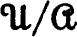

SUBSETS AND COMPLEMENTS; UNION AND INTERSECTION
Class calculus
Relation calculus, equivalence relations
Order-complete sets, chains, extension of order-preserving functions
Integers, definition by induction, b-adic expansions
Subsets, unions, the set of real numbers
Schroeder-Bernstein theorem
The first uncountable ordinal
Maximal principle, Kuratowski-Zorn lemma, axiom of choice, well-ordering principle
Comparison of topologies, neighborhood system of a point
Kuratowski closure operators
Topologies with a countable base, Lindelöf theorem
Components
A Largest and smallest topologies; B Topologies from neighborhood systems; C Topologies from interior operators; D Accumulation points in T1-spaces; E Kuratowski closure and complement problem; F Exercise on spaces with a countable base; G Exercise on dense sets; H Accumulation points; I The order topology; J Properties of the real numbers; K Half-open interval space; L Half-open rectangle space; M Example (the ordinals) on 1st and 2nd countability; N Countable chain condition; O The Euclidean plane; P Example on components; Q Theorem on separated sets; R Finite chain theorem for connected sets; S Locally connected spaces; T The Brouwer reduction theorem
CHAPTER 2: MOORE-SMITH CONVERGENCE
Uniqueness of limits, iterated limits
Specification of a topology by convergence
A Exercise on sequences; B Example: sequences are inadequate; C Exercise on Hausdorff spaces: door spaces; D Exercise on subsequences; E Example: cofinal subsets are inadequate; F Monotone nets; G Integration theory, junior grade; H Integration theory, utility grade; I Maximal ideals in lattices; J Universal nets; K Boolean rings: there are enough homomorphisms; L Filters
CHAPTER 3: PRODUCT AND QUOTIENT SPACES
Characterizations of continuity, homeomorphisms
Functions to a product, coordinatewise convergence, countability
Open and closed maps, upper semi-continuous decompositions
A Connected spaces; B Theorem on continuity; C Exercise on continuous functions; D Continuity at a point; continuous extension; E Exercise on real-valued continuous functions; F Upper semi-continuous functions; G Exercise on topological equivalence; H Homeomorphisms and one-to-one continuous maps; I Continuity in each of two variables; J Exercise on Euclidean n-space; K Exercise on closure, interior and boundary in products; L Exercise on product spaces; M Product of spaces with countable bases; N Example on products and separability; O Product of connected spaces; P Exercise on T1-spaces; Q Exercise on quotient spaces; R Example on quotient spaces and diagonal sequences; S Topological groups; T Subgroups of a topological group; U Factor groups and homomorphisms; V Box spaces; W Functionals on real linear spaces; X Real linear topological spaces
CHAPTER 4: EMBEDDING AND METRIZATION
EXISTENCE OF CONTINUOUS FUNCTIONS
Tychonoff lemma, Urysohn lemma
Embedding lemma, Tychonoff spaces
METRIC AND PSEUDO-METRIC SPACES
Metric topology, countable products
Urysohn metrization theorem, locally finite covers, refinement, characterization of metrizability
A Regular spaces; B Continuity of functions on a metric space; C Problem on metrics; D Hausdorff metric for subsets; E Example (the ordinals) on the product of normal spaces; F Example (the Tychonoff plank) on subspaces of normal spaces; G Example: products of quotients and non-regular Hausdorff spaces; H Hereditary, productive, and divisible properties; I Half-open interval space; J The set of zeros of a real continuous function; K Perfectly normal spaces; L Characterization of completely regular spaces; M Upper semi-continuous decomposition of a normal space
Finite intersection property, cluster points, Alexander subbase theorem
COMPACTNESS AND SEPARATION PROPERTIES
Compactness for Hausdorff, regular and completely regular spaces
The Tychonoff product theorem
U.s.c. decompositions with compact members
Alexandroff one point and Stone-Čech compactifications
Even coverings
A Exercise on real functions on a compact space; B Compact subsets; C Compactness relative to the order topology; D Isometries of compact metric spaces; E Countably compact and sequentially compact spaces; F Compactness; the intersection of compact connected sets; G Problem on local compactness; H Nest characterization of compactness; I Complete accumulation points; J Example: unit square with dictionary order; K Example (the ordinals) on normality and products; L The transfinite line; M Example: the Helly space; N Examples on closed maps and local compactness; O Cantor spaces; P Characterization of Stone-Čech compactification; Q Example (the ordinals) on compactification; R The Wallman compactification; S Boolean rings: Stone representation theorem; T Compact connected spaces (the chain argument); U Fully normal spaces; V Point finite covers and metacompact spaces; W Partition of unity; X The between theorem for semi-continuous functions; Y Paracompact spaces
UNIFORMITIES AND THE UNIFORM TOPOLOGY
Neighborhoods, bases and subbases
UNIFORM CONTINUITY; PRODUCT UNIFORMITIES
Uniform isomorphism, relativization, products
Characterization of metrizability, the gage of a uniformity
Cauchy nets, extension of functions
Existence and uniqueness
Uniqueness of uniformity, total boundedness
Baire theorem, localization of category, uniformly open maps
A Exercise on closed relations; B Exercise on the product of two uniform spaces; C A discrete non-metrizable uniform space; D Exercise: uniform spaces with a nested base; E Example: a very incomplete space (the ordinals); F The subbase theorem for total boundedness; G Some extremal uniformities; H Uniform neighborhood systems; I Écarts and metrics; J Uniform covering systems; K Topologically complete spaces: metrizable spaces; L Topologically complete spaces: uniformizable spaces; M The discrete subspace argument; countable compactness; N Invariant metrics; O Topological groups: uniformities and metrization; P Almost open subsets of a topological group; Q Completion of topological groups; R Continuity and openness of homo-morphisms: the closed graph theorem; S Summability; T Uniformly locally compact spaces; U The uniform boundedness theorem; V Boolean σ-rings
Topology and uniformity, compactness
COMPACT OPEN TOPOLOGY AND JOINT CONTINUITY
Uniqueness of jointly continuous topologies, c.o. compact spaces
Uniform convergence on a family of sets, completeness
UNIFORM CONVERGENCE ON COMPACTA
Topology, completeness, k-spaces
COMPACTNESS AND EQUICONTINUITY
The Ascoli theorem
Topological Ascoli theorem
A Exercise on the topology of pointwise convergence; B Exercise on convergence of functions; C Pointwise convergence on a dense subset; D The diagonal process and sequential compactness; E Dini’s theorem; F Continuity of an induced map; G Uniform equicontinuity; H Exercise on the uniformity ; I Continuity of evaluation; J Subspaces, products and quotients of k-spaces; K The k-extension of a topology; L Characterization of even continuity; M Continuous convergence; N The adjoint of a normed linear space; O Tietze extension theorem; P Density lemma for linear subspaces of C(X); Q The square root lemma for Banach algebras; R The Stone-Weierstrass theorem; S Structure of C(X); T Compactification of groups; almost periodic functions
APPENDIX: ELEMENTARY SET THEORY
Axiom of extent and classification axiom scheme
CLASSIFICATION AXIOM SCHEME (Continued)
Formal statement of classification axiom scheme
Axiom of subsets, axiom of union, unordered pairs
Axiom of substitution, axiom of amalgamation
Existence and uniqueness of order preserving functions
Axiom of regularity, structure of ordinals, transfinite induction
Axiom of infinity, Peano postulates for integers
The maximal principle
Elementary properties, finite sets, the product of cardinals